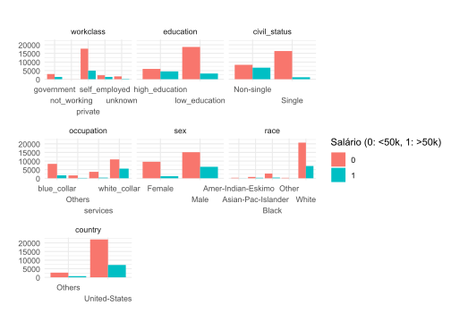

Afim de classificar de forma binária salários de um censo sintético recuperado do Kaggle, utilizou-se regressão logística, regressão Lasso e o algoritmo XGBoost — todos utilizando o framework do tidymodels, afim de obter um modelo que realizasse boas previsões baseado nas covariáveis.
Modelagem estatística é uma ferramenta fundamental para compreensão da relação de variáveis, principalmente quando tratamos de conjuntos de dados grandes, com relações complexas e padrões ocultos quando analisados de forma univariado ou bivariados.
Ao lidar com dados de renda, é fundamental entender a relação de covariáveis que são pertinentes que expliquem esta variável, visto que sabemos que a renda média é influenciada por fatores socioculturais, educacionais e demográficos, por exemplo. Entender e traçar todas essas relações uma a uma pode ser uma tarefa complicada, ou talvez até impossível, visto que é possível que existam relações que só são explicadas se combinados dois ou mais fatores afim do clarividência do padrão.
O entendimento do funcionamento do modelo é fundamental para obter uma melhor qualidade de ajuste. Existem diversos trabalhos na área de estatística que estudam o funcionamento e melhor ajuste e calibração destes modelos, dos quais destacarei o trabalho de Pinheiro (2023) que foi uma das fontes de inspiração deste trabalho.
Objetivos
Neste trabalho, buscou-se estudar um conjunto censitário sintético com diversas características demográficas, com objetivo fim de entender a relação entre covariáveis o salário — variável esta que se encontra binarizada no conjunto de dados, sendo:
0: Renda anual de até 50.000 dólares
1: Renda anual acima de 50.000 dólares
Os dados são públicos e podem ser acessados em Kaggle.
Apesar da natureza sintética dos dados, estes traduzem uma rotina cada vez mais comum do estatístico: lidar com conjuntos de dados massivos, complicados e de difícil separação.
Problema de pesquisa
A grande dificuldade para este conjunto de dados é justamente encontrar um modelo que performe bem ante a um conjunto de dados complexo. Temos categorias desbalanceadas, um alto número de observações e covariáveis relacionadas, fatores estes que podem levar a problemas no ajuste do modelo.
Existem inúmeras implementações de algoritmos que trabalham baseados na classificação binária de dados, sendo cada uma destas mais pertinente ou precisa para diferentes situações, em que se deve levar em consideração a natureza do dado com a qual se está trabalhando. No conjunto de dados utilizado no escopo deste trabalho, temos covariáveis numéricas e categóricas — sendo a última a responsável pela maioria das características existentes nos dados — o que possivelmente já descarta algumas possibilidades de algoritmos melhor preparados para lidar exclusivamente ou principalmente com dados numéricos, como k-means, análise de discriminante linear e quadrático, KNN, etc.
Além disso, está contido no escopo deste trabalho uma preocupação com a legibilidade e interpretação da aplicação dos modelos aos códigos. É fundamental no mercado de trabalho que o estatístico, ao trabalhar em grupo, produza análises e códigos que possam ser compreendidos e utilizados por outros técnicos da área, bem como garantir a fluidez e infiabilidade do código ante aos resultados publicados. Portanto, é importante utilizar um framework que seja simples, verborrágico e altamente interpretativo, trazendo ao técnico a usabilidade do produto, bem como a facilidade de interpretação para um terceiro que porventura necessite prestar suporte ao produto. Desta forma, optou-se por utilizar o tidymodels para a realização do trabalho, unificando a preparação do modelo afim de torná-los fidedignamente comparáveis ante aos seus resultados, bem como permitindo uma alta carga interpretativa sobre sua implementação.
Justificativa
Para este estudo, utilizou-se dados sintéticos disponíveis na plataforma Kaggle. Nesta plataforma, é comum os usuários postarem conjuntos de dados afim da comunidade trabalhar sobre eles possibilidades de modelagem, levando a competição entre usuários afim de encontrar o melhor ou mais eficiente modelo que descreva aqueles dados. Isso é interessante por um lado, pois permite a comparação dos resultados obtidos neste trabalho com o resultado do trabalho de outros usuários que tenham se debruçado sobre o mesmo conjunto e compartilhado seus resultados. Entretando, particularmente minha escolha sobre estes dados está mais relacionada ao fato da complexidade do conjunto ser proporcional ao que encontro no meu dia a dia. É muito comum, sobre um objetivo didático, deparar-se com conjuntos de dados pequenos, de fácil separação, ajuste e convergência quando em situação de aula na univerdade. Entretando, quando nos deparamos com dados reais, esta facilidade se esvai. Neste universo, nos vemos obrigados a aprender sobre pacotes e linguagens que trazem eficiencia e agilidade, bem como a modularização de nossas análises. Desta forma, tento trazer neste trabalho algumas preocupações relacionadas a esta rotina, como parcimônia na procura de hiperparâmetros de modelos, utilização de validação cruzada e paralelização do código sempre que possível.
Metodologia
Para realizar o ajuste deste modelo, selecionou-se três algoritmos dente os vários disponíveis para esta rotina. O algoritmo canônico, que quase sempre deve ser utilizado quando frente a um problema de classificação binária, é a regressão logística, visto que esta têm uma alta carga interpretativa sobre os parâmetros do modelo, sendo bastante flexível, além de computacionalmente eficiente.
Um possível problema da regressão logística é uma possível dificuldade na seleção de covariáveis pertinentes para a análise. É possível realizar procedimentos automáticos como o algoritmo stepwise para seleção destes parâmetros, mas podemos pensar também em técnicas que nativamente já são delineadas afim de considerar esta problemática. Uma dessas técnicas é a regressão Lasso, que realiza uma penalização em covariáveis pouco significativas afim de zerar seus coeficientes, tornando assim o modelo mais parcimonioso. Este procedimento aumenta o viés do modelo, porém diminui sua variância, estando portanto contido no paradigma do bias-variance tradeoff. Como neste exemplo estamos mais preocupados com a previsão do que com a interpretação dos parâmetros — ainda que seja interessante recuperar alguma carga interpretativa destes — podemos avaliar a eficácia desta penalização ante a comparação com a modelagem logística diretamente.
Será conduzido ainda um estudo de utilização do modelo XGBoosting, que é uma implementação eficiente de um modelo de gradient boosting afim de comparar com os dois modelos anteriores mais clássicos, visando uma melhora na qualidade da previsão do modelo. Por ser uma metodologia que utiliza da computação intensiva e menor carga interpretativa sobre os parâmetros do modelo, é esperado deste modelo que seja significativamente superior aos anteriores, visando a justificativa da sua utilização.
Descrição dos dados
Do conjunto de dados recuperados do kaggle, realizou-se algumas rotinas de engenharia de features para melhor acomodação das covariáveis ao formato que se intendia realizar a modelagem, melhorando seu poder preditivo e também adaptando as necessidades as quais este trabalho visa responder. Existiam nos dados algumas covariáveis categóricas com diversos fatores possíveis, mas que para o escopo deste trabalho não seriam interessantes, portanto foram agrupadas segundo categorias mais convenientes. Os agrupamentos realizados podem ser observados abaixo.
Show the code
# Transformando em fator a variável resposta, afim de evitar erros na modelagemdf$salary =factor(df$salary)# tornando o nome das colunas mais trabalháveisdf =clean_names(df)# Ajustando a covariável de pesodf$fnlwgt = df$fnlwgt/sum(df$fnlwgt)# Realizando agrupamentosdf = df %>%mutate(marital_status =factor(marital_status),relationship =factor(relationship),race =factor(race),sex =factor(sex),country =factor(ifelse(country =='United-States',country,'Others')),education =case_when( education %in%c("Bachelors","Masters","Assoc-acdm","Assoc-voc","Doctorate","Prof-school") ~"high_education",.default ="low_education"),education =factor(education),occupation =case_when( occupation %in%c("Adm-clerical", "Exec-managerial", "Prof-specialty","Tech-support", "Sales") ~"white_collar",# Ocupações que geralmente envolvem trabalho em escritório ou administrativo. occupation %in%c("Craft-repair", "Farming-fishing", "Handlers-cleaners","Machine-op-inspct", "Transport-moving") ~"blue_collar",# Ocupações que envolvem trabalho manual ou técnico. occupation %in%c("Other-service", "Priv-house-serv","Protective-serv") ~"services",# Ocupações no setor de serviços. occupation %in%c("Armed-Forces","?") ~"Others"),occupation =factor(occupation),civil_status =ifelse(marital_status %in%c('Never-married','Divorced','Separated', 'Widowed') | relationship %in%c('Not-in-family','Unmarried'),"Single","Non-single"),civil_status =factor(civil_status),workclass =case_when( workclass %in%c("Federal-gov", "Local-gov", "State-gov") ~"government", workclass =="Private"~"private", workclass %in%c("Self-emp-inc", "Self-emp-not-inc") ~"self_employed", workclass %in%c("Never-worked", "Without-pay") ~"not_working", workclass =="?"~"unknown"),workclass =factor(workclass) ) %>%select(-marital_status,-relationship)
Primeiramente, utilizou-se do pacote compareGroups para elaborar uma tabela simples porém eficiente e didática para visualização das diferenças entre as faixas salariais discriminadas por covariáveis, afim de uma primeira análise exploratória sobre os dados.
Podemos observar já nesta tabela algumas diferenças entre os grupos de cada faixa salarial, que serão confirmadas ou não na etapa de modelagem. Notamos que para todas as covariáveis, os testes não paramétricos de diferença entre os grupos acusaram significância, ainda que esta possivelmente é inflacinada pelo tamanho do conjunto de dados, e o desbalanceamento de observações nestes.
Show the code
df %>%select(age, education_num, capital_gain, capital_loss, hours_per_week) %>%gather() %>%ggplot(aes(value)) +geom_histogram(bins =30) +facet_wrap(~key, scales ='free_x') +labs(x ='', y ='Frequência', title ='Histogramas das Covariáveis Numéricas') +theme_minimal()
df %>%select(salary, age, education_num, capital_gain, capital_loss, hours_per_week) %>%gather(key ="variable", value ="value", -salary) %>%ggplot(aes(x =factor(salary), y = value)) +geom_boxplot() +facet_wrap(~variable, scales ='free_y') +labs(x ='Salary (0: <50k, 1: >50k)', y ='Valor',title ='Boxplot das Variáveis Numéricas por Faixa de Salário') +theme_minimal()
Show the code
df %>%select(salary, workclass, education, civil_status, occupation, sex, race, country) %>%gather(key ="variable", value ="value", -salary) %>%mutate(variable =factor(variable,levels =c("workclass", "education","civil_status","occupation", "sex", "race", "country"))) %>%ggplot(aes(x = value, fill =factor(salary))) +geom_bar(position ="dodge") +facet_wrap(~variable, scales ='free_x') +labs(x ='', y ='', fill ='Salário (0: <50k, 1: >50k)', title ='') +scale_x_discrete(guide =guide_axis(n.dodge=3)) +theme_minimal()

Podemos observar que para o grupo com renda anual acima de 50 mil dólares, categorias como a ocupação white collar são significativamente maiores que para o grupo de renda inferior a 50 mil dólares anuais, bem como negros representando mais que o dobro proporcionalmente do grupo de renda inferior a 50 mil dólares anuais ante ao grupo de renda superior a isso. Podemos observar ainda uma quantidade maior de anos de estudo, e portanto um nível de escolaridade significativamente superior no grupo de renda superior a 50 mil dólares. Destarte, é interessante observar ainda uma diferença possivelmente significativa de composição do grupo que trabalha na área privada ante as faixas salariais, sendo os trabalhadores desta categoria pior remunerados num geral. Aparenta haver ainda uma diferença significativa na composição de gênero entre as faixas salariais, com mulheres representando quase metade do grupo com renda inferior a 50 mil dólares anuais, e sendo menos da metade deste percentual no grupo com renda superior a 50 mil dólares anuais. Nesta tabela, a maior diferença significativa aparenta ser o estado civil, com não solteiros compondo a esmagadora maioria do grupo com renda superior a 50 mil dólares anuais, enquanto para o grupo com renda inferior a isto, os não solteiros também são maioria, porém uma maioria muito menos significativa, de apenas 66% ante a 85%.
Aplicação
Modelagem
Num contexto em que temos tantas covariáveis, tantas observações e, apesar de alguns indicativos observados na análise exploratória, não é possível observar um padrão óbvio que indique o salário do indivíduo. Para isso, utilizei do recurso da modelagem com apoio computacional afim de tornar possível esta análise. Um diferencial deste trabalho é a utilização do framework tidymodels, que é bastante verborrágico e permite uma compreensão das etapas do modelo pela leitura do código, além de eficiência e praticidade.
Parâmetros gerais
Irei testar diversos modelos e fazer comparação de resultados destes, mas utilizarei a mesma receita para todos.
Como observado na receita do modelo, existem 38 covariáveis nesta modelagem. Diversas abordagens podem ser utilizadas para selecionar as covariáveis de maior importância, sendo uma dessas a regressão lasso, que penaliza coeficientes e torna-os 0 em caso de insignificância.
Este é um modelo que contém um hiperparâmetro, portanto iremos ajustar um grid para escolher o melhor possível.
O XGBoost é um modelo de Gradient boosting baseado em árvores, que costuma performar bem em tarefas como esta, de classificação com diversas covariáveis
Este é um modelo de Boosting, ou seja, o “encaixe” de diversos modelos fracos afim da construção de um modelo robusto a partir da combinação destes resultados.
graph LR
A[Dados] --> B[Modelo 1];
B --> C[Modelo 2];
C --> D[...];
D --> E[Modelo m];
E --> F[Ensembling dos modelos];
F --> G[Modelo final];
Ajuste do XGBoost
Também iremos realizar o fine tuning de alguns hiperparâmetros deste modelo, no caso o número de árvores e a profundidade destas, afim de obter o melhor modelo.
Podemos verificar lado a lado a performance de cada modelo sobre este conjunto de dados.
Modelo logístico
Show the code
kable(resultados_logit)
.metric
.estimate
accuracy
0.8407800
specificity
0.5863607
sensitivity
0.9215210
Lasso
Show the code
kable(resultados_lasso)
.metric
.estimate
accuracy
0.8426224
specificity
0.5844487
sensitivity
0.9245550
XGBoost
Show the code
kable(resultados_xgboost)
.metric
.estimate
accuracy
0.8630431
specificity
0.6277884
sensitivity
0.9377023
O maior desafio para estes dados era capturar a especificidade (salário >50k). Vemos que todos os modelos tiveram dificuldade com esta métrica, porém houve um ganho sensível do modelo de árvore em relação aos modelos baseados em regressão. Entretando, a complexidade deste modelo possivelmente não justifica a sua utilização, visto um ganho tão baixo nas métricas ante aos modelos mais parcimoniosos.